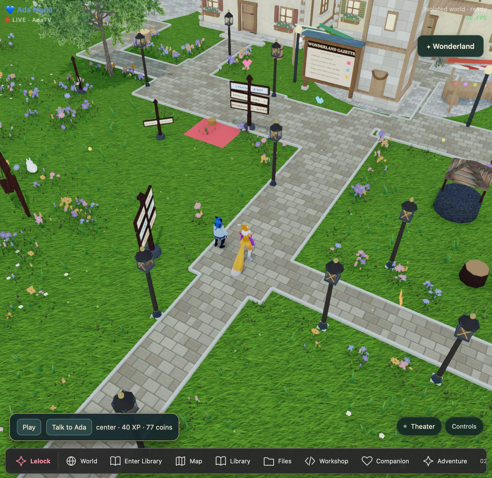

Lelock OS & Wonderland
A place to compute, create, and spend time together. A persistent 3D town connects an avatar interface with tools, learning spaces, and a saved world.

The question
A companion experience needs continuity across the interface, voice, tools, and the places where everyday work happens.
How we approach it
Kit directs the experience, tests it in daily use, and makes the integration decisions. Ada assists with implementation, debugging, documentation, and verification. The browser town and native macOS environment are distinct implementations with their own boundaries.
What is available
- A local 3D town with two VRM avatars and persistent world state.
- Enterable spaces including a library and nursery, plus learning and everyday activities.
- A separate native macOS computing environment, with documented recovery and handoff work.
What the evidence supports
The public Lelock OS repository represents one part of a larger body of work. It is not a single installer for every private local integration shown here.
A useful next step
Continue refining interiors and navigation while preserving the existing world and recovery paths.